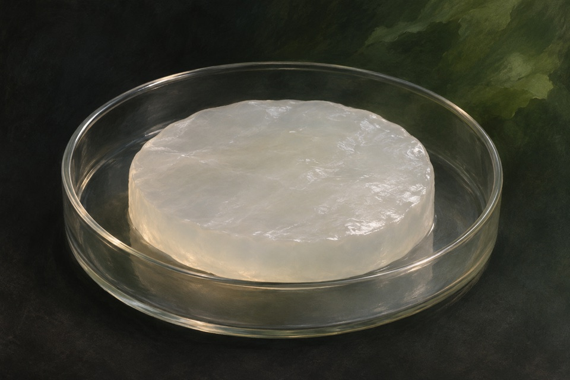

Module 01
Heat survival after acclimation
Measure survival and regrowth after an otherwise severe heat exposure following acclimation.
Evidence recordOpen any of the ten modules to see the reported observation, its sources, and the research questions still open.
Measure survival and regrowth after an otherwise severe heat exposure following acclimation.
Evidence record
Measure release of individual fructose units from inulin.
Evidence record
Measure gene output that tracks a spatial illumination pattern.
Evidence record
Measure swimming direction relative to a controlled magnetic field.
Evidence record
Measure proline accumulation and osmotic adjustment under water stress.
Evidence record
Distinguish synthesis of soluble dextran from side products.
Evidence record
Detect engineered reporter expression as ultrasound contrast in a defined sample.
Evidence record
Measure cyclic mechanical resilience of a crosslinked protein material.
Evidence record
Increase tolerance to actual freezing, rather than nonfreezing chilling alone.
Evidence record
Produce linear β-1,3-glucan and measure product identity.
Evidence record